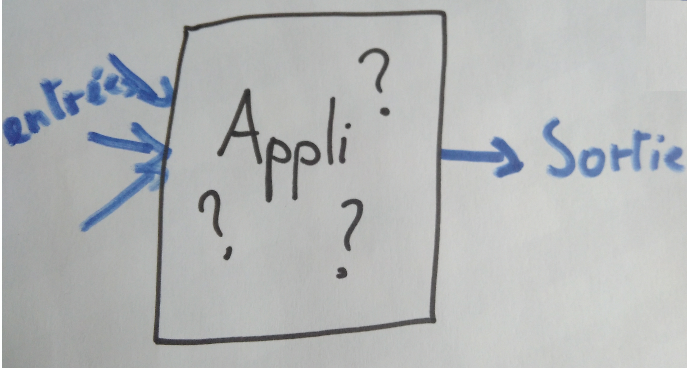

Gaspard POINTEAU
@Gaspard_PO
Les specs ne sont pas à jour et pas fiables
Un bug suffisamment vieux devient une feature
Toujours demander au PO
Le code fonctionne très bien, ne pas refactorer pour le principe.
C'est couteux et risqué.
Pour comprendre le fonctionnement ?
Pour ajouter une feature ?
Pour rembourser la dette ?
"Make the change easy before making the easy change."
Kent Beck
Pouvoir toujours revenir à un état stable.
S'autoriser à refactorer, renommer, bouger des choses pour rien, juste pour découvrir le code.
Le système est une boite noire, on vérifie que pour les mêmes entrées on a toujours les mêmes sorties
Créer une batterie de tests unitaires qui permmettent d'avoir des specs.
Commencer par tester la branche la plus courte
La branche avec le moins de complexité (for, if...) et la plus facile à tester.
Utiliser la couverture de code pour voir les branches qui ne sont pas encore testées.
Reflection
Mock d'objet statiques
Baby-steps
Tester en continu
Comprendre ce que fait le code et mettre cette compréhension dans le code.
Commencer par les branches les plus à droite (les plus imbriquées) et par des tous petits blocs.
Extraire des variables, forcer la visibilité du vide pour faire apparaitre de la duplication.